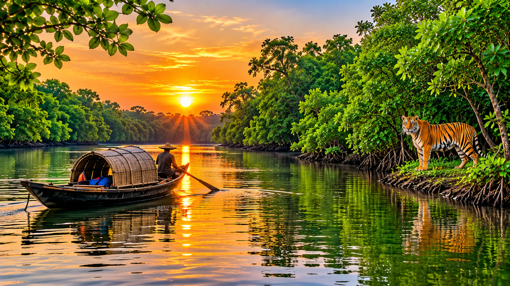
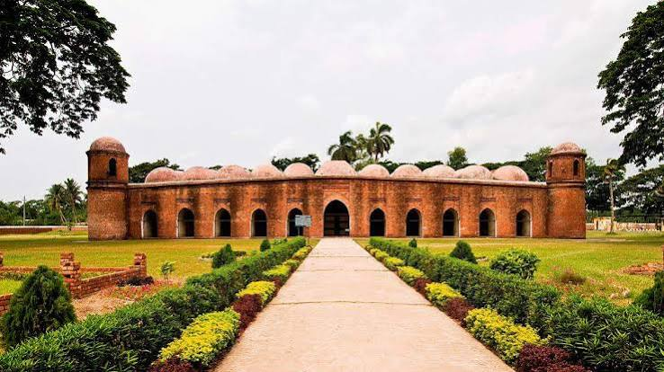

Historical importance
The region’s river ports and settlements supported trade across Bengal. Bagerhat’s mosque city stands as a lasting architectural legacy, while the Sundarbans has long protected coastal settlements and shaped local life.
Gateway to the Sundarbans
A great tidal delta where mangrove forests, winding rivers, and coastal communities meet.
Introduction & location
Khulna Division occupies the south-west of Bangladesh, facing the Bay of Bengal and sharing the Sundarbans with India. A dense network of tidal rivers and creeks shapes its settlements, farms, fisheries, and daily travel.
Khulna city is an important regional centre, while the coast and forest-edge communities have developed generations of knowledge for living with tides, cyclones, and changing shorelines.
Discover the region

A UNESCO-listed mangrove wilderness of creeks and islands, home to the Bengal tiger and an extraordinary range of wildlife.

This UNESCO World Heritage site preserves the remarkable fifteenth-century architecture associated with Khan Jahan Ali.

Boat trips along permitted routes reveal the tidal channels and changing landscapes at the edge of the forest.
Heritage & everyday life
The region’s river ports and settlements supported trade across Bengal. Bagerhat’s mosque city stands as a lasting architectural legacy, while the Sundarbans has long protected coastal settlements and shaped local life.
Fishing, honey collection, boat-building, folk songs, and shared seasonal rituals are central to coastal identity. Communities carry knowledge of tides and forests, alongside the wider traditions of Bengali festivals and family life.
Freshwater and brackish-water fish, shrimp, crab, and rice feature prominently in local meals. Chui jhal, a peppery regional preparation, is among the best-known flavours of the south-west.
Agriculture, fisheries, shrimp aquaculture, jute, and port-related activity sustain livelihoods. The Sundarbans provides forest products and ecosystem services, which depend on responsible management.
The Pasur, Rupsha, Shibsa, and other tidal rivers flow through the Sundarbans mangroves. The forest shelters tigers, estuarine crocodiles, spotted deer, dolphins, and abundant birdlife.
The Sundarbans is a globally significant natural defence and biodiversity refuge. Khulna’s coastal communities, fisheries, heritage, and ports are also vital to food security, conservation, and the country’s connection to the sea.